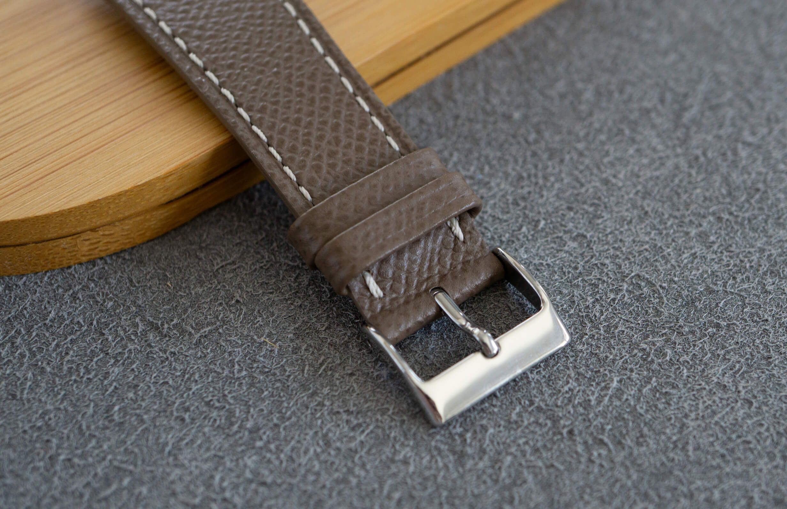
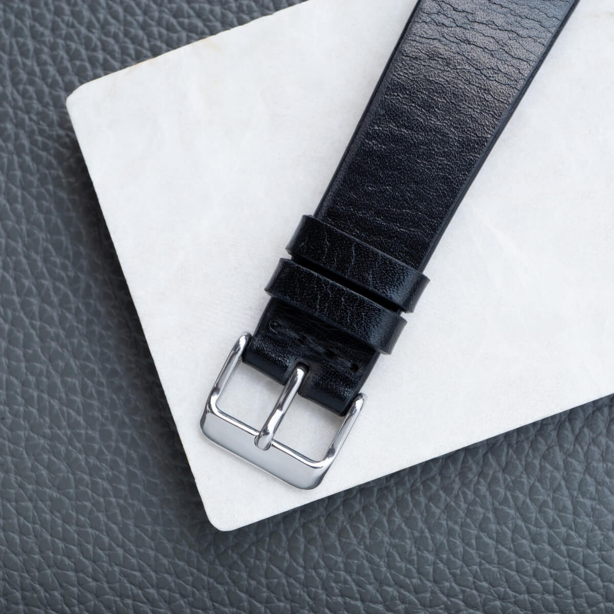
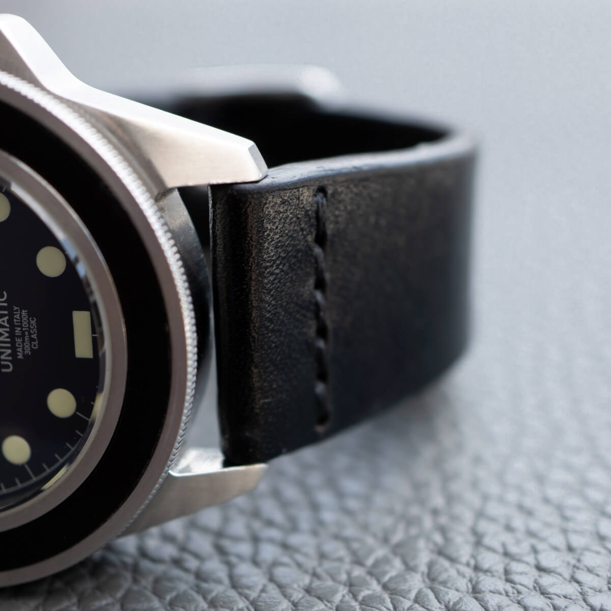
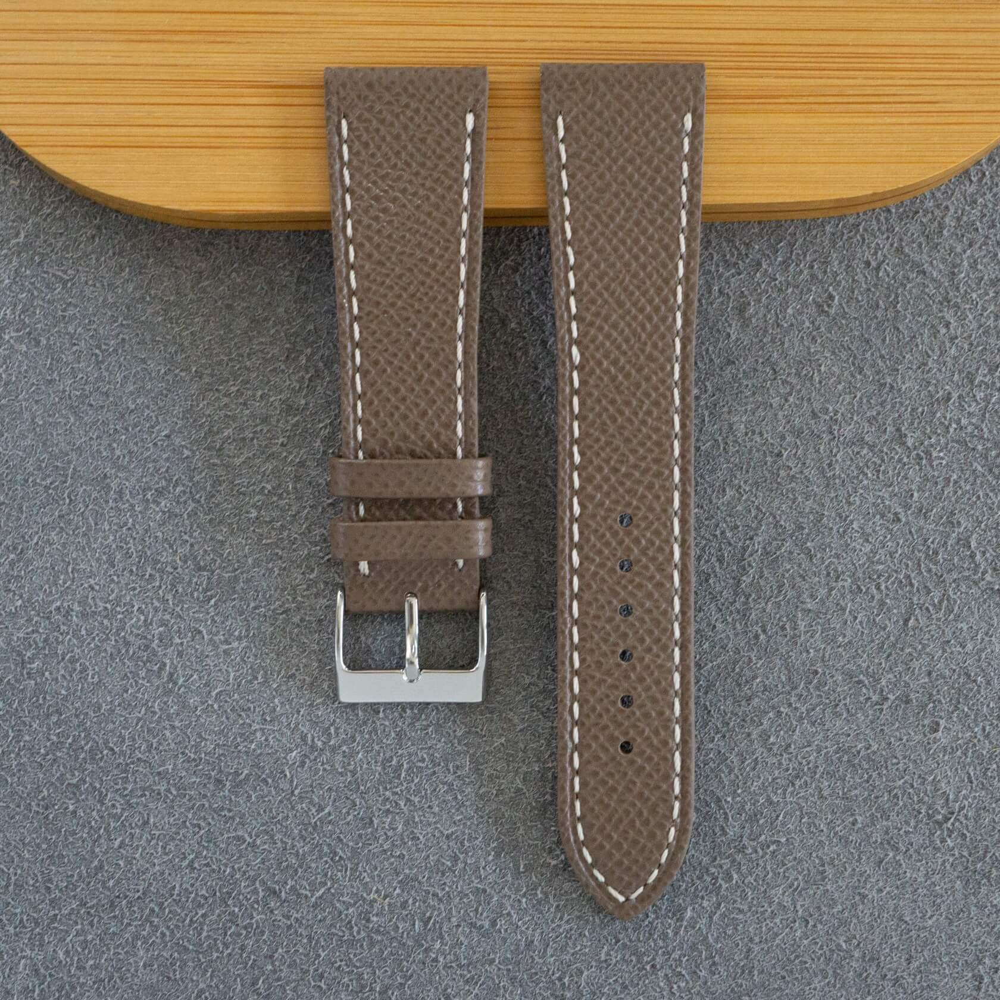
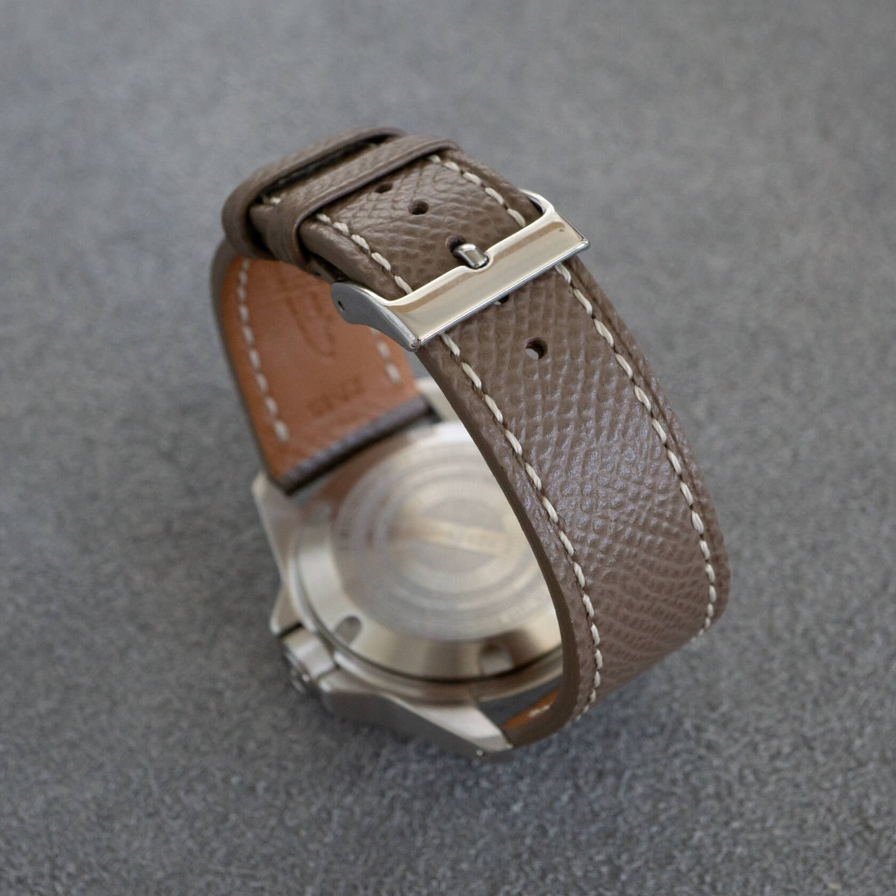
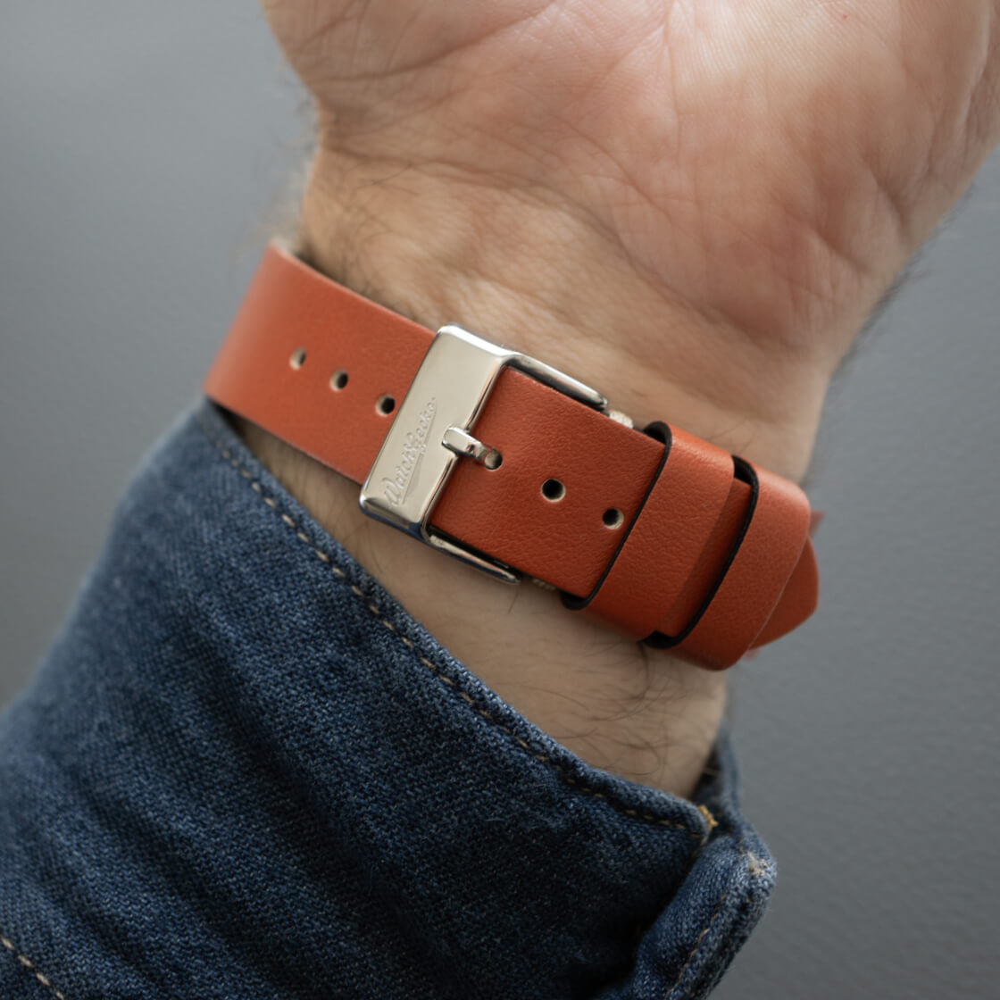
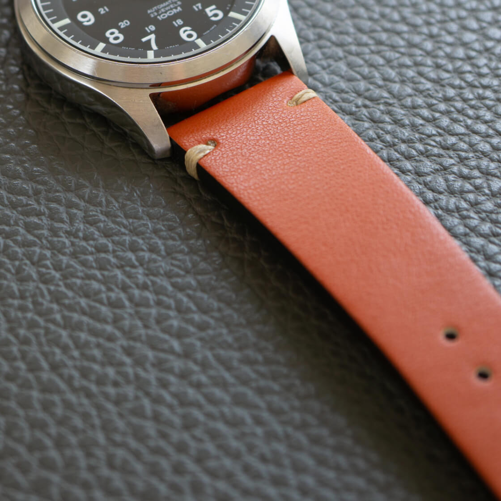

A Practical Guide to Leather Types and Grains
If you look at the top navigation of this website, you will see many different strap categories. Rubber, stainless steel, perlon, cordura, velcro... But one category easily wins in variety: leather. This is the oldest material used for watch straps, and honestly, nothing beats its classic, timeless appeal. But "leather" isn't just one thing. The term covers a wide range of materials, qualities, and finishes. Let's break it down.
 Nenad Pantelic • June 26, 2025
Nenad Pantelic • June 26, 2025

The Leather Comparison Table
Before diving into the specifics of each type, we want to provide a simple table for easy comparison. Use it as your quick reference, and later, the sections that follow explore what makes each of these materials unique.
| Leather Type | Source & Composition | Key Characteristics | Typical Watch Strap Price Range (USD) |
| Full-Grain | The top layer of the animal hide | Highest durability; develops a rich patina over time; shows natural imperfections. | $70 - $300+ |
| Top-Grain | The second layer of the hide, sanded smooth | Very durable with a uniform finish; great balance of quality and price. | $40 - $150 |
| Genuine Leather | Inner/lower layers of the hide | Real leather but less durable; affordable; does not age with a patina. | $15 - $50 |
| Bonded Leather | Shredded leather scraps bonded with polyurethane | Lowest cost; not a solid hide; prone to peeling and cracking over time. | $5 - $25 |
| PU Leather | A synthetic polyurethane polymer on a fabric base | Vegan/animal-free; highly affordable; available in many colors and styles. | $10 - $30 |
| Vegan Leather | Synthetics or plant-based materials | Entirely animal-free; can be highly sustainable and innovative. | $15 - $120+ |
Note: This price range is just a guide; custom straps from skilled artisans often cost more due to the time and craftsmanship invested.
Full-Grain Leather: The Best Option
If you are looking for the best of the best, this is it.
Sourced from the outermost layer of the hide, it keeps the natural grain, with all inherent textures and character-defining imperfections. This is precisely why it is so popular. And pricey.
Full-grain is the strongest and most resilient leather, and over time, it does not wear out easily but rather develops a rich, beautiful patina.


Top-Grain Leather: The All-Rounder
Just below full-grain in quality is a slightly more refined option, top-grain leather. This leather is from the second layer of the hide, just under the top. Its surface is often sanded and given a finished coat to create a more uniform and flawless appearance.
For sure, it is not quite as tough as full-grain, but nevertheless the top-grain remains an incredibly durable and high-quality material. It offers a great balance of durability, a clean aesthetic, and a more accessible price point.


Genuine Leather: The Entry-Level Option
Here is where the terminology can get a bit tricky.
"Genuine Leather" sounds impressive, but it typically refers to leather made from the inner, lower layers of the hide.
It is real leather, but it lacks the strength and dense fibers of the upper layers. These straps are often less durable and will not develop the rich patina of their higher-quality counterparts. They are common with lower-priced brands.
Bonded Leather: The Leather Composite
This one sits at the bottom of the leather hierarchy.
Bonded leather is not a solid hide. It is made from leftover leather scraps and fibers that are shredded and bonded together onto a backing with a material like polyurethane.
It is the least durable option and is prone to peeling and cracking over time. For sure, it keeps costs extremely low, but just please be aware of what you are buying.
PU Leather: The Affordable Alternative
PU, or polyurethane leather, is a fully synthetic material. It is made by coating a base fabric with a plastic polymer to mimic the look and feel of real leather.
To put it bluntly: If a strap's material is PU, it is not real leather.
But PU is very affordable and available in many colors and textures. PU is a great, guilt-free way to experiment with bold styles without spending too much money on more premium straps.
Vegan Leather: The Sustainable & Ethical Material
This category is rapidly evolving and we see a lot of innovations on this front. Vegan leather is a broad term for any material that resembles leather but uses no animal products. This includes PU and PVC plastics, but also cutting-edge materials made from plant-based sources like pineapple leaves (Piñatex), mushrooms, and even apple peels.
With the watch industry's growing focus on sustainability and ethics, vegan leather is seen as the future standard for watch strap material.


Bringing It All Together
When you are researching and exploring available options, please always read the product descriptions carefully and do not hesitate to ask artisans directly what type of leather they are using. An honest seller will be happy to share the details.
Of course, the material is only one part of the story. The durability, longevity, and look of a strap depend heavily on other factors.
Consider the construction type. Does it have a minimal side stitch or a fully stitched design? Standard buckle or a deployant?
Think about your own lifestyle, the climate where you live, and how often you plan to wear the strap. A suede strap might not be the best choice for a daily beater in a humid environment, while a full-grain strap can handle almost anything.
Finally, do not be afraid to explore these new vegan options. I will admit, I was skeptical at first, but after trying several straps made from apple skin leftovers, I am convinced.